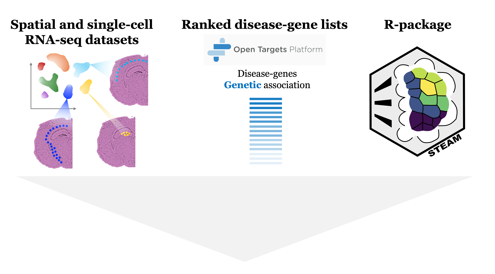
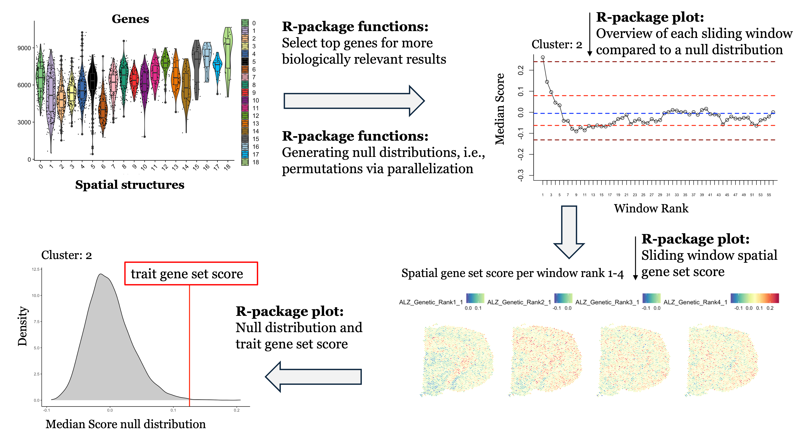
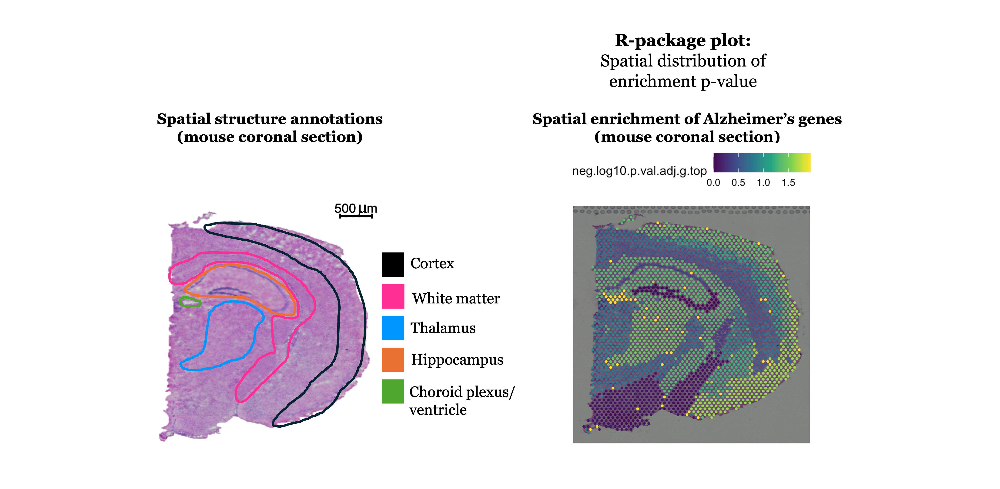
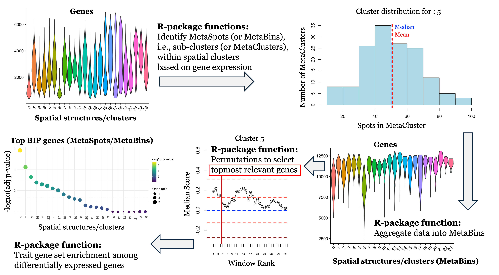
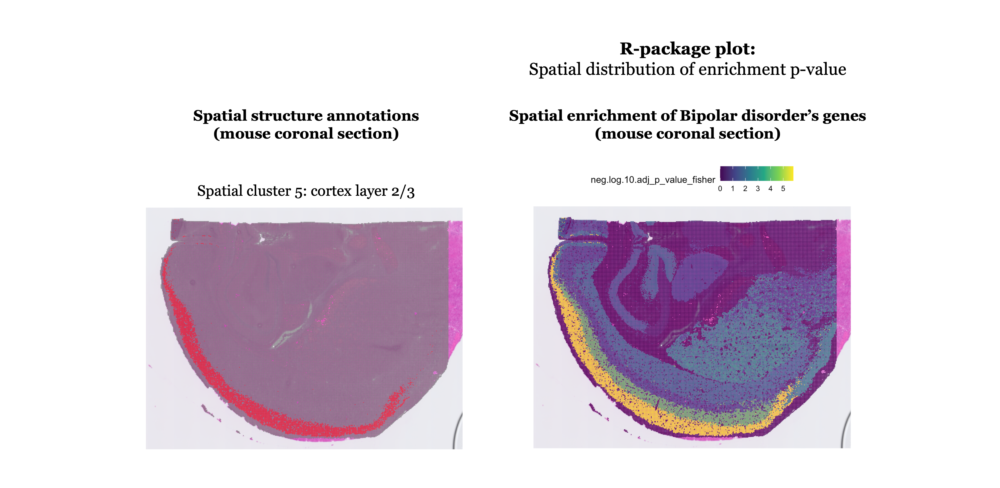
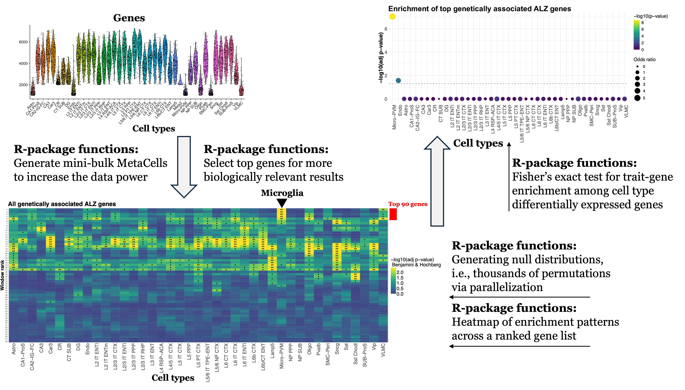

STEAM is a framework for Spatial Trait Enrichment Analysis with perMutation testing, a robust computational approach for measuring the enrichment of average gene expression across clusters in a dataset from a given gene list. It calculates a permutation p-value and performs multiple-testing corrections based on the number of clusters. For ranked gene lists, STEAM enables interrogation of the topmost relevant sets of genes based on their combined average enrichment. The STEAM framework also includes an approach using MetaSpots (or MetaCells or MetaBins) within assigned clusters for sparse and high-resolution data. Using permutations to guide the selection of topmost relevant ranked genes and then testing for trait gene set enrichment among differentially expressed genes.
We applied STEAM to spatially resolved transcriptomics (SRT) datasets to elucidate the genetic basis of complex traits and diseases. We analyzed 31 SRT datasets from humans and mice spanning 8 organs and 32 complex traits. We also applied STEAM to single-cell and single-nuclei RNA-seq datasets from the mouse and human brains, highlighting complementary insights from the two data types and a high-resolution mouse brain dataset.
Vignette Overview
Open Targets gene lists: Formatting of .tsv gene lists, extracting data with genetic association scores.
Visium Mouse (Coronal): Standard STEAM workflow for Visium data (55 µm resolution).
Visium Human (Cortex): STEAM workflow using MetaSpots for Visium data (55 µm resolution). Helpful when data is extra sparse and/or to increase data power.
Visium HD Mouse (Coronal): STEAM workflow for Visium HD data (16 µm resolution) using MetaSpots (or MetaBins).
scRNAseq Mouse: STEAM workflow using MetaCells on single-cell RNA-seq data. Helpful when data is extra sparse and/or to increase data power.
snRNAseq Human: STEAM workflow using MetaCells on single-nucleus RNA-seq data. Helpful when data is extra sparse and/or to increase data power.
Graphic Summary
Below we showcase analysis examples from the STEAM R-package, using one spatial dataset of a mouse brain coronal section (10X Genomics) and one single cell RNA-seq dataset of mouse cortex and hippocampus (Yao et al. Cell 2021).






MIT License
Copyright (c) 2026 STEAM authors
Permission is hereby granted, free of charge, to any person obtaining a copy of this software and associated documentation files (the “Software”), to deal in the Software without restriction, including without limitation the rights to use, copy, modify, merge, publish, distribute, sublicense, and/or sell copies of the Software, and to permit persons to whom the Software is furnished to do so, subject to the following conditions:
The above copyright notice and this permission notice shall be included in all copies or substantial portions of the Software.
THE SOFTWARE IS PROVIDED “AS IS”, WITHOUT WARRANTY OF ANY KIND, EXPRESS OR IMPLIED, INCLUDING BUT NOT LIMITED TO THE WARRANTIES OF MERCHANTABILITY, FITNESS FOR A PARTICULAR PURPOSE AND NONINFRINGEMENT. IN NO EVENT SHALL THE AUTHORS OR COPYRIGHT HOLDERS BE LIABLE FOR ANY CLAIM, DAMAGES OR OTHER LIABILITY, WHETHER IN AN ACTION OF CONTRACT, TORT OR OTHERWISE, ARISING FROM, OUT OF OR IN CONNECTION WITH THE SOFTWARE OR THE USE OR OTHER DEALINGS IN THE SOFTWARE.
Developed by Linda Kvastad and Rasool Saghaleyni